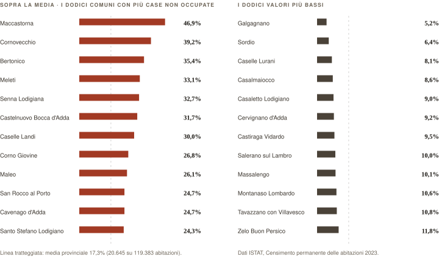
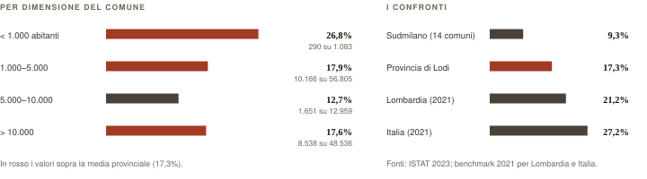
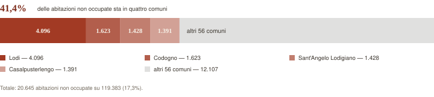
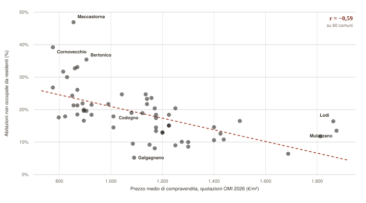

Inchiesta · 60 comuni della provincia di Lodi · Fonte: ISTAT, Censimento permanente delle abitazioni (2019, 2021, 2023)
Nei sessanta comuni della provincia di Lodi ci sono 20.645 abitazioni non occupate da residenti su 119.383: il 17,3%. Per ISTAT «non occupata» significa vuota oppure occupata solo da persone non residenti (seconde case, immobili sfitti, in vendita o in ristrutturazione): non equivale a «disponibile».
Il dato è sotto la media lombarda e nazionale del 2021 (21,2% e 27,2%) e sopra il Sudmilano (9,3%). Ma nasconde due province in una: cinque comuni sotto i mille abitanti hanno il 26,8% di abitazioni non occupate, i quattro più grandi (Lodi, Codogno, Casalpusterlengo, Sant'Angelo) il 17,6%, i quattro comuni tra 5.000 e 10.000 abitanti il 12,7%.

I numeri
| Indicatore | Valore |
|---|---|
| Abitazioni totali (2023) | 119.383 |
| Occupate da residenti | 98.738 |
| Non occupate | 20.645 |
| Tasso di non occupazione 2023 | 17,3% |
| Non occupate 2019 (valore assoluto) | 23.037 |
| Variazione 2019-2023 | −2.392 abitazioni |
| Popolazione 2019 → 2026 | 226.949 → 231.481 (+2,0%) |
| Abitazioni non occupate ogni 100 residenti | 8,9 |
| Famiglie coabitanti | 1.864 su 99.879 (1,87%) |
| Sezioni di censimento | 2.148 |
Che cosa dicono i dati
- Concentrazione: 9 comuni superano il 25% di abitazioni non occupate e 6 il 30%; 7 stanno sotto il 10% (Galgagnano 5,2%, Sordio 6,4%, Caselle Lurani 8,1%).
- Piccoli comuni: il tasso cala al crescere della popolazione (correlazione −0,53 con il logaritmo dei residenti). Maccastorna è al 46,9%, ma sono 23 abitazioni su 49 in un comune di 67 abitanti: un immobile sposta la percentuale di due punti.

- Numeri assoluti: Lodi (4.096), Codogno (1.623), Sant'Angelo Lodigiano (1.428) e Casalpusterlengo (1.391) da soli hanno il 41% di tutte le abitazioni non occupate della provincia.

- Calo 2019-2023: le non occupate diminuiscono in 50 comuni su 60 (in 10 aumentano: i maggiori aumenti a Cornovecchio +2,8 punti, Caselle Landi +2,7, Santo Stefano Lodigiano +2,4). Il calo più forte è a Lodi (−803 abitazioni) e Codogno (−233). La lettura va fatta con cautela: ISTAT segnala che tra le rilevazioni sono migliorate le procedure di collegamento tra famiglie, abitazioni ed edifici, quindi parte della variazione può essere tecnica.
- Prezzi: dove le quotazioni OMI 2026 sono più basse lo sfitto è più alto (correlazione −0,59 tra prezzo di compravendita e tasso di non occupazione). Con il canone la relazione è debole (−0,35).

- Demografia: i comuni che hanno perso più abitanti dal 2019 sono anche quelli con più abitazioni non occupate (correlazione −0,39 con la variazione di popolazione). Diciotto comuni hanno meno residenti nel 2026 che nel 2019.
- Coabitazione: solo l'1,87% delle famiglie vive in coabitazione; il massimo è a Cavenago d'Adda (3,6%).
Comune per comune
| Comune | Abitazioni | Non occupate | % 2023 | % 2019 | Δ punti | Pop. 2026 | Coabitanti |
|---|---|---|---|---|---|---|---|
| Maccastorna | 49 | 23 | 46,9 | 46,8 | +0,1 | 67 | 0,0% |
| Cornovecchio | 166 | 65 | 39,2 | 36,4 | +2,8 | 199 | 0,0% |
| Bertonico | 700 | 248 | 35,4 | 34,3 | +1,1 | 1.081 | 0,4% |
| Meleti | 281 | 93 | 33,1 | 33,3 | -0,2 | 456 | 0,0% |
| Senna Lodigiana | 1.147 | 375 | 32,7 | 34,5 | -1,8 | 1.813 | 1,5% |
| Castelnuovo Bocca d'Adda | 999 | 317 | 31,7 | 33,1 | -1,3 | 1.544 | 1,7% |
| Caselle Landi | 929 | 279 | 30,0 | 27,3 | +2,7 | 1.431 | 1,5% |
| Corno Giovine | 664 | 178 | 26,8 | 28,8 | -2,0 | 1.144 | 0,0% |
| Maleo | 1.769 | 462 | 26,1 | 26,6 | -0,5 | 3.055 | 2,4% |
| San Rocco al Porto | 1.981 | 490 | 24,7 | 25,4 | -0,6 | 3.452 | 1,7% |
| Cavenago d'Adda | 1.218 | 301 | 24,7 | 24,5 | +0,2 | 2.128 | 3,6% |
| Santo Stefano Lodigiano | 1.054 | 256 | 24,3 | 21,9 | +2,4 | 1.852 | 3,0% |
| Borghetto Lodigiano | 2.376 | 561 | 23,6 | 24,6 | -1,0 | 4.430 | 1,7% |
| Mairago | 712 | 166 | 23,3 | 24,4 | -1,1 | 1.375 | 1,6% |
| Livraga | 1.395 | 306 | 21,9 | 26,5 | -4,6 | 2.534 | 0,9% |
| Graffignana | 1.399 | 304 | 21,7 | 22,5 | -0,7 | 2.602 | 2,0% |
| Castelgerundo | 770 | 167 | 21,7 | 21,5 | +0,1 | 1.454 | 2,3% |
| Turano Lodigiano | 823 | 177 | 21,5 | 24,7 | -3,2 | 1.576 | 2,6% |
| Guardamiglio | 1.383 | 295 | 21,3 | 22,2 | -0,8 | 2.730 | 2,1% |
| Orio Litta | 1.092 | 233 | 21,3 | 23,4 | -2,1 | 2.076 | 2,1% |
| Sant'Angelo Lodigiano | 6.989 | 1.428 | 20,4 | 21,2 | -0,8 | 13.577 | 2,2% |
| Boffalora d'Adda | 915 | 187 | 20,4 | 22,1 | -1,7 | 1.737 | 1,2% |
| Ospedaletto Lodigiano | 981 | 196 | 20,0 | 22,5 | -2,5 | 2.008 | 1,0% |
| Brembio | 1.432 | 280 | 19,6 | 22,2 | -2,6 | 2.807 | 0,9% |
| San Fiorano | 982 | 192 | 19,6 | 21,8 | -2,3 | 1.893 | 1,5% |
| Abbadia Cerreto | 142 | 27 | 19,0 | 20,9 | -1,9 | 280 | 3,4% |
| Codogno | 8.577 | 1.623 | 18,9 | 21,8 | -2,8 | 15.652 | 1,7% |
| Castiglione d'Adda | 2.423 | 449 | 18,5 | 18,2 | +0,3 | 4.524 | 2,3% |
| Villanova del Sillaro | 880 | 162 | 18,4 | 24,5 | -6,1 | 1.899 | 1,5% |
| Ossago Lodigiano | 723 | 133 | 18,4 | 18,0 | +0,3 | 1.422 | 1,7% |
| Terranova dei Passerini | 445 | 82 | 18,4 | 18,3 | +0,1 | 952 | 2,2% |
| Fombio | 1.196 | 214 | 17,9 | 20,1 | -2,2 | 2.266 | 0,2% |
| Corte Palasio | 772 | 138 | 17,9 | 19,2 | -1,4 | 1.522 | 1,7% |
| Somaglia | 1.853 | 326 | 17,6 | 19,2 | -1,6 | 3.864 | 2,6% |
| Casalpusterlengo | 8.005 | 1.391 | 17,4 | 19,9 | -2,5 | 16.069 | 2,1% |
| Secugnago | 1.036 | 172 | 16,6 | 20,9 | -4,3 | 2.001 | 0,7% |
| San Martino in Strada | 1.945 | 321 | 16,5 | 17,9 | -1,4 | 3.776 | 1,6% |
| Lodi | 24.965 | 4.096 | 16,4 | 19,8 | -3,4 | 45.643 | 2,2% |
| Pieve Fissiraga | 840 | 127 | 15,1 | 17,1 | -2,0 | 1.753 | 1,1% |
| Merlino | 834 | 126 | 15,1 | 20,1 | -5,0 | 1.655 | 2,0% |
| Lodi Vecchio | 3.786 | 551 | 14,6 | 17,1 | -2,6 | 7.717 | 2,6% |
| Crespiatica | 1.083 | 157 | 14,5 | 14,8 | -0,3 | 2.208 | 1,1% |
| Valera Fratta | 805 | 117 | 14,5 | 16,2 | -1,7 | 1.698 | 3,1% |
| Mulazzano | 2.808 | 378 | 13,5 | 15,0 | -1,6 | 5.829 | 2,7% |
| Cornegliano Laudense | 1.438 | 193 | 13,4 | 14,7 | -1,3 | 2.861 | 2,0% |
| Marudo | 831 | 108 | 13,0 | 15,0 | -2,0 | 1.757 | 2,0% |
| Borgo San Giovanni | 1.120 | 145 | 12,9 | 14,3 | -1,4 | 2.444 | 1,2% |
| Comazzo | 1.163 | 147 | 12,6 | 18,3 | -5,7 | 2.379 | 1,7% |
| Zelo Buon Persico | 3.539 | 418 | 11,8 | 12,2 | -0,4 | 7.434 | 0,7% |
| Tavazzano con Villavesco | 2.826 | 304 | 10,8 | 13,4 | -2,7 | 6.098 | 1,8% |
| Montanaso Lombardo | 1.084 | 115 | 10,6 | 12,1 | -1,5 | 2.256 | 1,3% |
| Massalengo | 2.066 | 209 | 10,1 | 11,9 | -1,8 | 4.456 | 1,9% |
| Salerano sul Lambro | 1.250 | 125 | 10,0 | 11,6 | -1,6 | 2.690 | 1,1% |
| Castiraga Vidardo | 1.304 | 124 | 9,5 | 14,5 | -5,0 | 3.048 | 1,4% |
| Cervignano d'Adda | 1.040 | 96 | 9,2 | 8,9 | +0,4 | 2.247 | 1,2% |
| Casaletto Lodigiano | 1.374 | 123 | 9,0 | 12,1 | -3,1 | 3.019 | 1,3% |
| Casalmaiocco | 1.444 | 124 | 8,6 | 10,2 | -1,6 | 3.218 | 2,2% |
| Caselle Lurani | 1.415 | 114 | 8,1 | 12,2 | -4,1 | 3.071 | 1,3% |
| Sordio | 1.572 | 100 | 6,4 | 7,7 | -1,3 | 3.444 | 2,1% |
| Galgagnano | 593 | 31 | 5,2 | 8,8 | -3,6 | 1.308 | 0,0% |
Metodo e limiti
Dati ISTAT del Censimento permanente: stato di occupazione per comune (2019, 2021, 2023), dettaglio per sezione di censimento 2023, epoca di costruzione e densità abitativa a livello provinciale (2021). Popolazione ISTAT POSAS al 1° gennaio 2019 e 2026. Quotazioni OMI 2026 (Agenzia delle Entrate).
Verifica: la somma di A8 e A3 per comune coincide all'unità con la banca dati SDMX su tutti e 60 i comuni. I totali provinciali quadrano: 98.738 occupate più 20.645 non occupate fanno 119.383.
Limiti: «non occupata» non equivale a «disponibile»; epoca di costruzione e densità sono solo provinciali; i comuni con poche decine di abitazioni hanno percentuali fragili; il confronto 2019-2023 può contenere effetti tecnici; la base 2019 (abitazioni totali) non è riconciliata, quindi per quell'anno sono riportati solo valori assoluti.
Fonti
- ISTAT — Censimento permanente delle abitazioni (SDMX e dati per sezione 2023)
- ISTAT — Censimento permanente 2021: caratteristiche delle abitazioni (Italia 27,2%; Lombardia 21,2%)
- ISTAT — popolazione residente 2019 e 2026 (POSAS)
- Agenzia delle Entrate — quotazioni OMI 2026
Dataset completo: case-vuote-lodigiano-60-comuni.csv, 60 comuni per 23 indicatori.